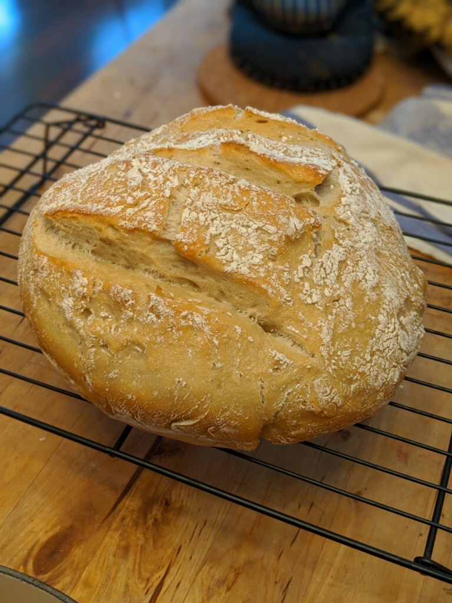
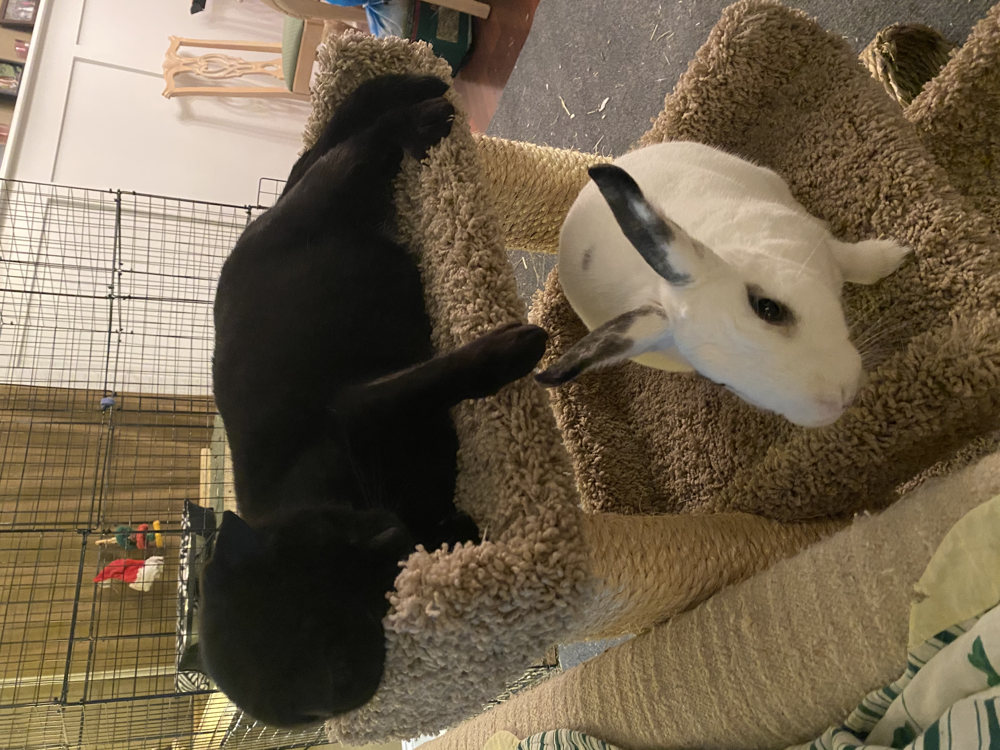

Well, this has certainly been a unique past couple of months. I had a lot of things in mind for the spring 2020 semester and beyond, but I can safely say it’s all been completely upended now.
I don’t want to trivialize COVID-19 to the suburban equivalent of “can’t go to the community pool for a few months because of a particularly bad case of the fiery poops;” there are real people whose livelihoods are suffering: financially, professionally, and literally, and I think the world as a whole would be a lot better off if we collectively recognized that and pitched in to help.
The Lady and I have been establishing new habits and routines, while trying to maintain a semblance of normality during the pandemic. There have been a lot of snacks (peanut butter M&Ms, cookie dough ice cream, hint of lime chips, and of course, Lucky Charms cereal), some creativity in workplace setup (moved an extra computer monitor from upstairs, and set up a surge protector behind the dining table–also had to line one end of the table with aluminum foil, because our cat kept jumping up on the table from that side), and digging out some old mainstays.
Classics Never Go Out of Style
Early on in the lockdown, The Lady and I kicked off a Zelda-thon, starting with Skyward Sword on the Nintendo Wii. There’s a strange story there: I’d purchased the game for her way back when we lived in separate apartments in Pittsburgh, because she was the Zelda fan between the two of us. Yeah, I’m a gamer, but she’s a Zelda gamer. It was a lot of fun to watch her play the game, and I occasionally jumped in when she needed to tap out. But after reaching the penultimate boss, we just… stopped playing.
For eight years. We knew this, because when we fired up the game again on the weekend of March 14, we saw the last save file pop up for March 28, 2012. Almost eight years to the day.
Since The Lady played most of the game eight years ago, I ended up “driving” this time around. She jumped in whenever she wanted, but we ended up tearing through the game in 10 days. It was pretty impressive, and it was great to finally see the end of the game that has been referenced SO MUCH in theory videos around Breath of the Wild (which we’ll get to!).
Once we knocked out Skyward Sword, The Lady took the driver’s seat for Twilight Princess. I’d never seen the game played start to finish, and had really never seen anything beyond the quests involving collecting light shards (which is, as I discovered, a meager portion of the game’s introduction). Suffice to say, this one took a lot longer; most of the month of April, if memory serves.
After that, I took a deep breath and fired up Breath of the Wild… in Master Mode. Yes, I’ve posted about this game here before, and we ended up beating it sometime in November 2019. But the DLC included an evil modification called “Master Mode”, which among other terrible things, has the following effects:
- Every enemy in the game is upgraded by one level (red become blue, blue become brown, brown become silver, silver become gold, a brand-new level)
- Enemies heal when they’ve been out of combat for two seconds (not hyperbole; literally two seconds)
- Brand-new floating platforms with enemies, because fuck you that’s why
{kind=link}
{kind=link}
It is brutal, especially in the first quarter of the game. You end up skipping fights by default, sneaking around a lot more, and fighting as though you cannot take a single hit (because in all likelihood, you can’t). I haven’t finished it yet, but just this past weekend we completed the last of the DLC “Ballad of the Champions,” so really the only thing left of the Main Quests is to destroy Calamity Ganon.
Once this is done, The Lady plans to break out the game that really and truly started it all: Ocarina of Time, which I’ve also never seen played start to finish, so that will be fun to watch!
On a completely separate video gaming front, I managed to get a Stargate mod working for Sins of a Solar Empire, and even started playing a small 1v1 as the Ancients against the Wraith. It looks incredible!
I can’t wait to explore some of the other races–Asgard, Goa’uld, and Ori round out the playable races, while a recent update includes some “minor factions” that are always AI-controlled but can still change the dynamics of play: Tau’ri (that’s us!), Free Jaffa, Vanir (rogue Asgard offshoot seen in Atlantis), and Michael’s Hybrids.
Variety is the Pribe of Libe
While The Lady and I have been re-visiting the classics to keep us grounded, we’ve also been branching out.
First, like most, we tried our hand at baking sourdough. And, frankly, it turned out incredible!

We’ve since baked a new recipe of chocolate chip cookies (which mostly turned out chewy), and have plans to whip up some butterscotch bars.
We’ve also been starting up some regular remote get-togethers, from weekly chats with my family to weekly post-run “coffee chats” with some of our running friends. We’ll go out for runs by ourselves, come home, get cleaned up, and FaceTime each other while making coffee and getting ready for the day. We’re also about to try out remote gaming tomorrow with some friends of ours from Pittsburgh–they, like us, are big board gaming geeks. I’m not sure exactly what we’re going to play or how it’ll pan out, but I’m excited to try!
The Lady and I took a page from a recent list of recommended quarantine board games and purchased Star Realms. Think: a super-simple mash-up of Magic: The Gathering and Dominion. It’s a deck-building game with a common “market” of cards you can purchase, and the goal is to use those cards to bludgeon your opponent to death in the most sci-fi manner possible. Meanwhile, I sunk several days in over at Hero Forge designing avatars for her and me. I think they came out pretty well!
Speaking of remote activities together, we actually did try our hand at a “remote viewing” of a movie, and it worked remarkably well! Two of our runners friends joined us to watch A League Of Their Own, both because one of them had never seen it before, and because of last week’s news that the last of the original Rockford Peaches passed away at 101. We’d originally hoped to use a video synchronization platform like Netflix Party, but Netflix doesn’t have A League Of Their Own; Amazon Prime does. So we looked into Kast, but after 30 minutes of tinkering, it was clear the app is still too young and rough around the edges; we were constantly having either sound or video issues. So we did it the old-fashioned way: fired up a Zoom chat, and counted down to hitting “Play” out loud. And it actually worked quite well! We were never more than 20 seconds off each other.
Our sudden and constant presence all day every may have caught our pets off guard, but they sure seem to be enjoying it. Zippy is scampering around us, jumping on our laps, and trying to jump on our work table one minute, then is passed out on the couch for hours on end the next. Clover, meanwhile, seems to find a napping spot anywhere she goes, but has started expecting treats at all hours of the day (partly our fault for giving her the occasional piece of banana with breakfast… and piece of fruit or veggie for lunch… and for dinner… ).

One of the biggest changes on my end (besides the obvious, of course), was buying a new laptop. This has been on my list for several months, as my aging MacBook Pro Mid-2014 has been struggling more and more to keep up with workloads. When the new laptop arrived, it took three entire days to fully transfer and configure it just right; I’m still coming across things here and there that need to be fully fleshed out (e.g., screen saver still isn’t the picture collage, and it’s not properly password protected, and the desktop backgrounds don’t switch out, and other small but noticeable things).
But the thing I wasn’t expecting that hit me really hard when it was time to shut down, wipe, and ship out the old laptop was the melancholy.
I’d purchased this old laptop (aptly-named “Apollo”) in September 2014 in the throes of writing my dissertation. I remember it distinctly: sitting in the Squirrel Hill Starbucks, ear pods in, listening to some Pandora station while typing away in the Latex document… when suddenly my ear pods screeeeeched, my screen froze, and moments later, my ear pods went silent and the screen went dark. I rebooted, and… nothing. According to the Apple Geniuses later that evening, the motherboard has inexplicably fried. It was well out of warranty, so my only option was to purchase a brand-new laptop.

That was Apollo. It got me through my PhD dissertation and defense, the move to Athens and the start of my tenure-track position at UGA, and through the first five years of it–well into my promotion and tenure process, my first couple of successful grants, and so, so many papers. It was a veritable workhorse of a laptop that, with a little sprucing up, still has some life in it.
Now, I have a laptop that is literal orders of magnitude more powerful than the previous one, yet it has huge shoes to fill. We’ll see if the new laptop–Dinraal–is up to the task.
{kind=link}
What’s next?
Not sure, honestly. We’re taking it one day at a time. We’re being kind to each other and ourselves. We’re trying to be safe, not just for us, but for everyone else around us.
Stay safe and happy, my friends.
Citation
@online{quinn2020,
author = {Shannon Quinn},
title = {At Home During {COVID-19}},
date = {2020-05-20},
url = {https://magsol.github.io/2020-05-20-working-from-home},
langid = {en}
}